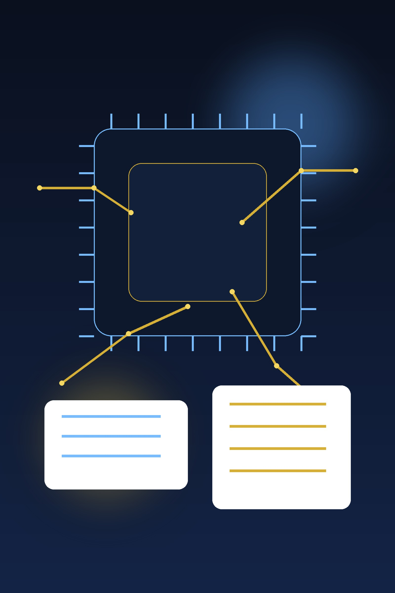

01 · 行业分析
AI 平台赛道现在真正分化的，不只是模型强弱，而是谁能把基础设施建设能力也变成长期优势。
行业已经从“谁敢花钱买 GPU”往下一层走。接下来更稀缺的，不只是拿到芯片，而是能不能把园区、电力、网络、施工与交付节奏一起组织起来。META 最近这组公告最值钱的地方，是它在告诉市场：自己不是只在预算表上押 AI，而是在现实世界里补整条供给链。
今天这篇不再停留在“Meta 也在加码 AI”这句空话，而是把 4 月最新节点拆开看：芯片路线、数据中心、光纤施工和人才培训，正在从零散投入变成更像经营系统的闭环。
真正值得继续把 META 放在研究前台的，不是因为它新闻热度更高，而是因为这些节点开始把一个更值钱的问题讲清楚：Meta 的 AI 投入，究竟是在堆更重的成本，还是在重写一条更难被复制的经营供给链。只要答案越来越偏后者，这只票的长期质量就不是“广告现金牛 + AI 想象力”，而是更厚的平台资产。
第一部分默认按 5+2 展开：行业、商业模式、管理层、财报、估值、投资逻辑、投资风险。先查候选池与去重，再把为什么是它讲透，而不是先写漂亮结论。
这篇应该按照 5+2 真正展开，因为如果只用几条亮点卡，很容易又把 META 写成一篇“新闻很多、所以继续看”的快评。更准确的写法是：最近这组节点正在把 thesis 从抽象 capex，往更具体的经营系统推进。也就是说，市场以后不只会问它花了多少钱，还会问它有没有把最慢、最脏、最难补的基础设施链条也握到自己手里。
行业已经从“谁敢花钱买 GPU”往下一层走。接下来更稀缺的，不只是拿到芯片，而是能不能把园区、电力、网络、施工与交付节奏一起组织起来。META 最近这组公告最值钱的地方，是它在告诉市场：自己不是只在预算表上押 AI，而是在现实世界里补整条供给链。
广告平台仍然是今天的现金发动机，AI 则更像把推荐效率、用户时长、商业化和基础设施掌控权一起加厚的方式。换句话说，META 不是为了讲一个新故事去单独养 AI 部门，而是在试图用旧底盘托住新能力，这会让它比那些只有愿景、没有现金机器的 AI 参与者更像平台复利资产。
4/21 的 Tulsa 数据中心节点，4/20 的光纤技师培训项目，再往前是 4/14 的 Broadcom 多代定制硅合作。这三条线一起看，说明管理层不是只想靠采购解决算力问题，而是在补园区、电力、网络施工、人才和硅路线。真正的治理质量，不是会讲远景，而是会不会把这些苦活脏活一层层接上。
也就是说，下一阶段真正需要验证的，不是 headline 更多，而是经营数字有没有开始回答：大规模 capex 是否被更高的广告效率、产品使用强度或更清晰的 AI 回流路径托住。只有这一步往前走，平台闭环的故事才不只是漂亮，而是能穿透到股东回报层。
越像高质量平台，越容易被市场提前给高分。现在要克制的地方就在这里：基础设施闭环正在变硬，并不等于任何价格都舒服。真正值得盯的是，市场究竟已经替未来几年回流付了多少钱；如果价格把太多好日子都先算进去了，后面的回报就会被时间成本压住。
和 NVDA、NBIS 放在一起看，META 这轮的优势不是公司一定更好，而是新闻窗口里，它最清楚地回答了“为什么现在还值得继续研究”。定制硅、数据中心、光纤培训这三条线共同说明：它不是只在增加 AI 支出，而是在把基础设施、分发和商业化压成更完整的闭环，这让它仍是最自然的新钱入口。
基础设施建设越完整，市场就越容易提前把它理解成“更安全的 AI 平台”。可现实里，ROI 还在继续验证，广告业务若放缓会直接影响资本开支容忍度，而估值又可能把未来几年兑现抢先计价。换句话说，META 的风险不是 thesis 太薄，而是 thesis 一旦被过度定价，赔率会先出问题。
第二部分默认写一个真实、可带走、可复用的小故事：有事实依据、有边界感，最后能沉成一句真正值得带走的话，并显式告诉读者以后再遇到类似情况该先怎么看。
很多 AI 投资叙事最容易犯的错，是把“宣布很大的预算”和“真的能把系统跑起来”混为一谈。前者谁都能讲，后者才稀缺。因为越往后走，你就越会遇到园区、电力、光纤、施工、人才培训、先进封装、网络架构这些不好写进一句口号里的脏活累活。
Meta 最近最值得重视的，不是它又说自己要投 AI，而是这些脏活累活开始在公告层面连起来了：上游有 Broadcom 定制硅，中游有 AI 优化数据中心，下游连光纤技师培训都开始补。这代表它在做的不是单点采购，而是在修一条更完整的供给链。
这背后真正稀缺的地方在于，很多公司都愿意多花钱买 GPU，但不是很多公司都有能力把电力、园区、网络施工、人才培养、芯片路线和旧现金牛放进同一个经营逻辑里。市场早晚会区分两类 AI 投入：一种只是把预算做大，另一种是把组织能力做厚。Meta 如果继续往后者走，它的估值讨论就不该只停在 capex 很大或广告业务很强，而应该上升到“它是否正在形成一条别人更难补齐的基础设施—分发—商业化闭环”。
这套框架以后也能直接迁移：当你再看其他 AI 平台公司时，先不要被模型参数吸走注意力，先看它有没有本事把最后一公里也变成自己的组织能力。如果没有，那往往更像一个昂贵的愿景；如果有，才更像平台护城河在变厚。

今天的案例就是 META：如果只看 4/21 的数据中心公告，它像一条 capex 新闻；如果把 4/20 的光纤技师培训和 4/14 的 Broadcom 合作一起看，它更像在把 AI 基础设施的供给链往自己体系里继续收。
平台型 AI 受益，真正值钱的不只是模型和芯片，而是公司有没有本事把最脏最慢、但别人最难补的基础设施环节也变成自己的能力。
新闻必须和解读分开写：先完成最新候选集核查，再按“新鲜度 + 价格解释力”排序；每条都要标来源、交代事实，并把为什么重要讲细，不能只剩 headline。

第三部分默认先摆真实节点，再在同一张卡里补判断与动作边界。只要强行拆成左右两栏会制造大块留白、读感断裂或模板感，就回到更自然的单卡结构。
Meta 在官方 Newsroom 公布 Tulsa, Oklahoma 新 AI-optimized data center 动工。这说明超大 capex 已经继续落到具体园区、电力与建设节奏，不再只是抽象预算口径。
单看 4/21，你可能只会看到 capex；单看 4/20，你可能只会觉得是 ESG 或培训项目；但三条合起来，才像一条正在变厚的供给链。
Meta 与 CBRE 投入美国光纤技师培训项目，目标是为数据中心和施工现场补基础设施人才。对平台股来说，这种新闻比“又有新模型”更不性感，但往往更有经营含义。
广告、分发和产品入口还是旧底盘，AI 基建是把底盘加厚的方式。这种路径比从零找商业化更值得给高质量分。
Meta 公布与 Broadcom 共研多代 custom silicon，继续把算力底座从采购逻辑推进到系统设计逻辑。
但不把基础设施闭环误读成 ROI 已经全部兑现。真正让动作升级的，仍是未来经营数字继续跟上。
官方摘要指向 NAB Show 2026，说明 NVIDIA 不只是卖卡，还在继续吃软件生态和专业工作流升级带来的平台宽度。
NVIDIA 仍然强，可市场早就知道它强。真正决定动作的，是中期增长斜率与 ROI 怀疑何时被更硬证据缓解。
NVIDIA 强调 open models 与 local real-time context 的结合，继续把平台叙事从训练/云扩到端侧与本地 agentic AI。
这解释了为什么它估值一直贵：它不是单一芯片公司，而是在卖整套计算平台。
这类时候不该硬塞弱新闻到第一位，更应该老老实实承认：公司的 thesis 没坏，但最新解释力不如 META 那么强。
公司质量和赔率是两回事。没有更强的新经营证据前，更像 hold / 先等。
Nebius 继续展示自己不只是在租 GPU，而是在工具链、训练效率与开源生态上补平台层能力。
容量、融资、交付和收入必须逐步跟上，否则平台叙事容易跑在经营前面。
这是最硬的一条底层供给证据：公司希望把 AI 基础设施故事落到电力与容量。
可以继续观察，但不能因为一两条正面节点就把执行风险当作已经过去。
说明它想从“租算力”继续往“卖平台”挪，但还需要更多商业兑现来支撑估值。
如果后续缺少更近硬节点，下一阶段更该盯财报、资本结构和客户验证，而不是再追 headline。
对 BOXX 这种工具型持仓，最新新闻的重要性远低于角色稳定性。
当研究对象多、但没有谁已经舒服到值得立刻重仓时，这类持仓能帮你不被现金管理拖累。
只要 META / NVDA / NBIS 还处在需要验证与研究的阶段，BOXX 就仍有存在价值。
用户当前组合里只有 1 股，不是收益引擎，而是边界管理工具。
工具型仓位的意义，本来就不是制造故事，而是给组合提供等待和缓冲。
如果未来 META 或其他高质量名字出现更舒服价格，它就是可调出的等待仓。
动作地图默认收口成兼容的持仓卡片：保留真正会影响仓位的变量，同时补当前最重要的一件事与可复核的评级/目标价参考。
0421 这篇真正要落下来的结论，不只是“META 继续值得看”，而是“为什么值得看”的层级已经升了一档：它正在把 AI 基础设施从抽象预算、采购列表和宏大口号，往一个更完整的经营系统里压。对组合而言，这意味着 META 仍是最自然的新钱研究入口，但动作也必须更克制——先等 ROI、利润率和商业化回流继续被经营数字确认，再谈更激进的仓位升级。NVDA 继续拿住，但更尊重赔率；NBIS 继续 prove-it；BOXX 则继续承担等待仓角色。